Spring, 2020. New York City. Every morning a number arrived, and every morning it was bigger than the day before. One infected person became ten, ten became a hundred, a hundred became a thousand. On a map of the city, a few red dots bloomed into a rash that spread borough to borough.
Behind that rising line sat a single, terrifying question — the only question that really mattered to the doctors and the people running the city: what does tomorrow look like? If you could take "what day is it?" and turn it into "how many people will be infected," you could decide how many beds to build, when to lock down, whether the wave was cresting or just beginning.
So that is the little machine we need: something you feed a day, and it hands you back a number of infected. This whole lecture is about the two completely different ways humanity learned to build that machine — and why the second way, the strange and almost lazy one, quietly took over the world.
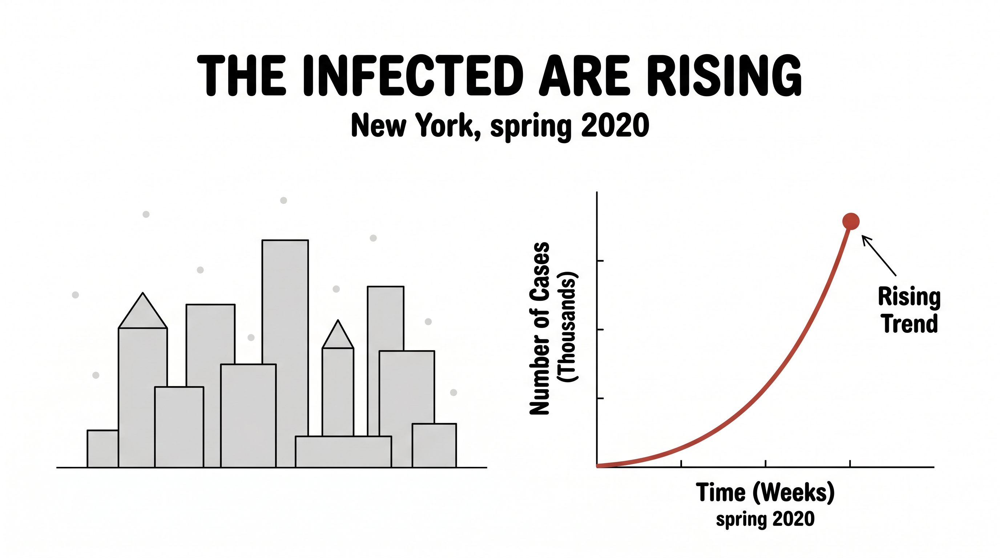
The first instinct is the noble one: open up the disease and understand its gears. This is how an epidemiologist thinks, and it gives us the famous SIR model.
Split the whole city into three buckets. Susceptible — people who could still catch it. Infected — people who have it right now. Recovered — people who had it and are now immune. Over time, people only flow one way: a susceptible person meets an infected person and becomes infected; an infected person recovers. S → I → R.
Now write that flow down as the rate each bucket changes. Two numbers run the whole show: β (beta), how easily the disease jumps across a contact, and γ (gamma), how quickly people recover.
Read them in plain English. The susceptible bucket only ever drains (people leave it when they get sick). The infected bucket gains the newly sick and loses the newly recovered — so it swells, peaks, and drains. The recovered bucket only ever fills. Trace that out and you get the three curves everyone saw on the news in 2020: susceptible slides down, infected rises into a wave and crashes, recovered climbs and flattens into a plateau.
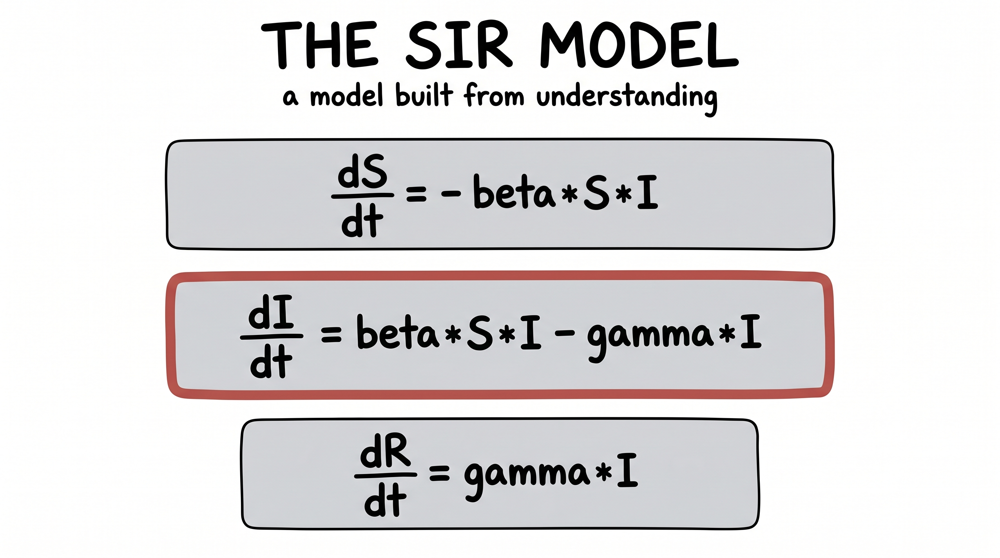
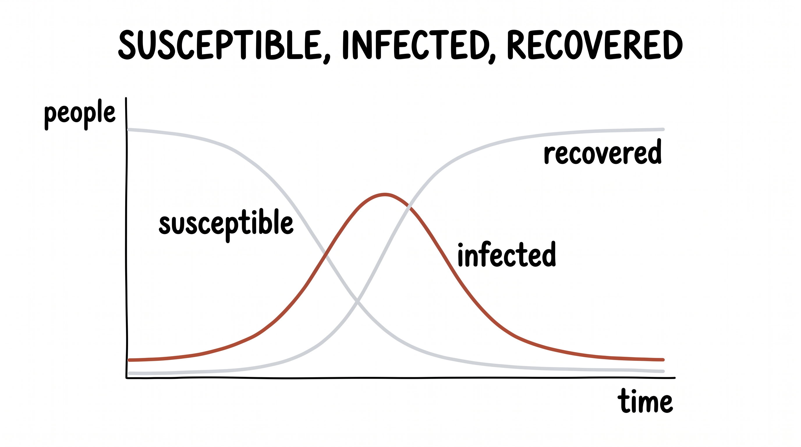
Here is the payoff. Take the real New York numbers and tune β and γ until the model's curves sit on top of the data. Now you don't just have a prediction — you have meaning. You can compute the most important number of the whole pandemic:
R₀ is how many people one sick person infects on average. Above 1, the fire grows. Below 1, it burns out. Every symbol in this model stands for something you can point at in the real world. That is the gift of the first way: it is interpretable. You end up understanding the disease.
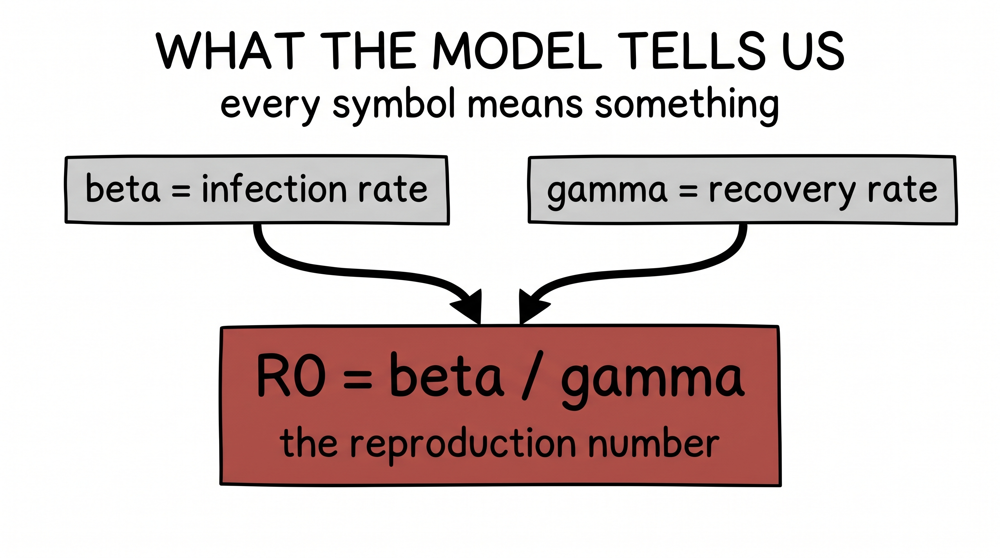
Now the rebellious idea — the one this whole series is built around. What if we throw all the biology away? No susceptible, no infected, no recovered, no β, no γ. We say only this: the number of infected is some function of time.
And here we hit an uncomfortable truth: functions can be unimaginably complicated. A straight line is the simplest — degree 1. Bend it once and you get a parabola — degree 2. Each step up the ladder buys another bend, another wiggle, another bit of freedom to chase the data up and down. We call that freedom expressivity.
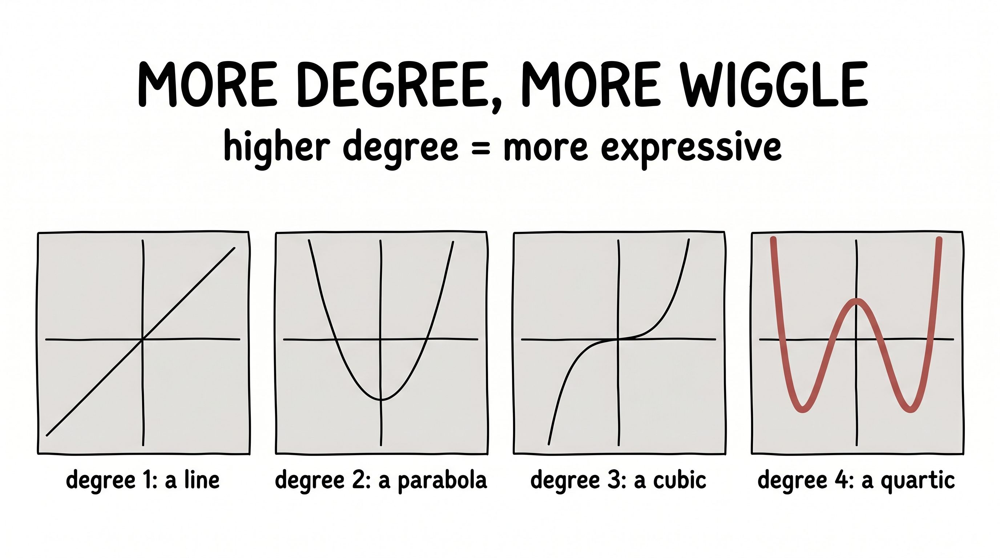
The true infection curve is not a tidy parabola. It is some monster — a function wrapped inside a function wrapped inside a function, f(g(h(…(t)))) — far beyond anything you would ever write down by hand. We cannot name it. We cannot derive it. But maybe we don't have to. Maybe we just need a shape flexible enough to become it — and a way to bend that shape until it lands on the data.
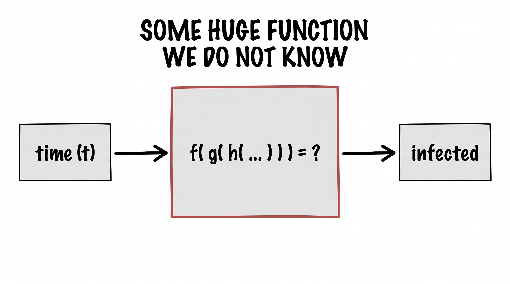
Enter the neural network — the most flexible shape we know how to build. Feed time in at one end; read infected off the other. Inside, it is nothing but additions and multiplications, all of them controlled by thousands of numbers called weights.
Picture every weight as a little knob on a giant mixing board. Turn the knobs one way and the network traces a flat line. Turn them another way and it traces a wild, bending curve. The network can become almost any shape — you just have to find the right setting of the knobs.
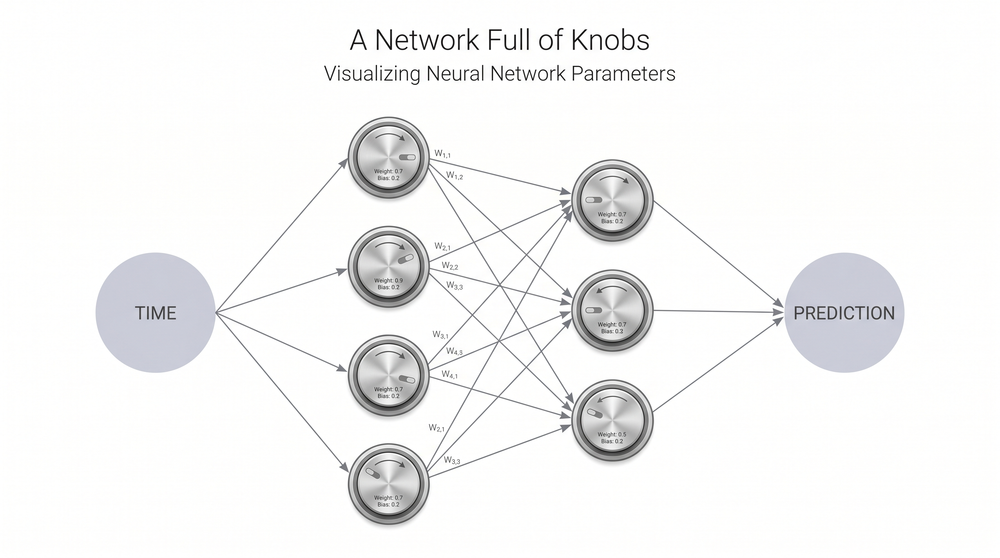
At the start, the knobs are set at random. So the network's first guess is nonsense — a lazy straight line drawn through data that clearly curves. The whole problem has now quietly changed shape. We are no longer asking "what is the function?" We are asking something far more mechanical: how do we turn the knobs until the curve lands on the dots?
First we need a score for "how wrong are we." Add up the gap between the network's curve and every real dot — that total is the loss. Big loss, bad fit. Zero loss, perfect fit. The goal is simply to make the loss small.
Now picture the loss as a landscape. Every possible setting of all the knobs is one spot on the ground, and the height of the ground there is how wrong that setting makes us. Somewhere out in that landscape is a deep valley — the best knobs. We want to get there. The trouble is we can't see the map. We are standing in fog.
But we can feel the slope under our feet — which way is downhill. So we do the only sensible thing: take a small step downhill, feel the slope again, step again. The direction of steepest downhill is called the gradient; walking against it, over and over, is gradient descent.
For a single knob, the move is tiny and exact. Look at how much the loss changes when you nudge this one knob — that slope is a derivative, written ∂L/∂w — and step the knob a little in the downhill direction:
That η (eta) is just the step size. The miracle that makes this practical is backpropagation: a single sweep backward through the network that computes ∂L/∂w for every knob at once, even when there are billions of them. Compute the slopes, nudge every knob a hair downhill, repeat thousands of times — and the random scribble slowly, stubbornly settles onto the data. That is the entire engine.
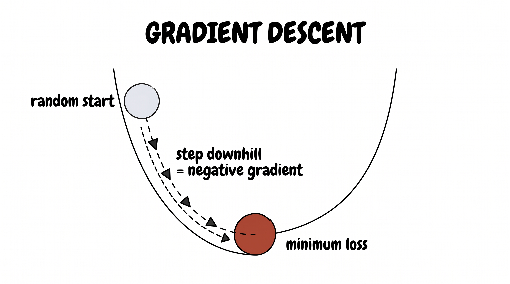
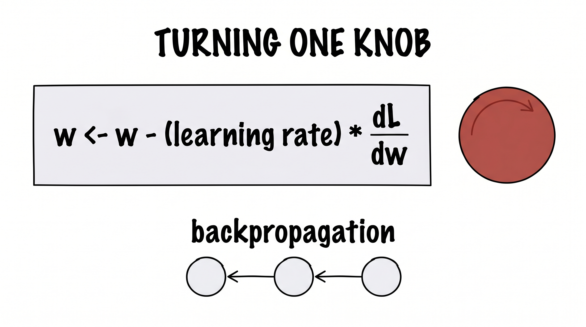
Step all the way back and look at what we did. We never used a single fact about viruses. We said: "I don't know the rule, so I'll build a huge flexible function and let an automatic procedure turn its knobs until it fits." And then we walked away and let gradient descent do the work.
If you don't know how to get from input to output, don't try to write the rule. Drop a large function full of tunable knobs in the middle — and hand the search off to gradient descent.
This is not clever. It is not understanding. It is a handoff. And here is the punchline humans keep rediscovering, a little sheepishly, every decade: it works — almost embarrassingly well. The bigger and more flexible the function, the more easily it wraps itself around whatever pattern is hiding in the data. Everything that follows in this lecture is this exact same move, over and over, just wearing different costumes.
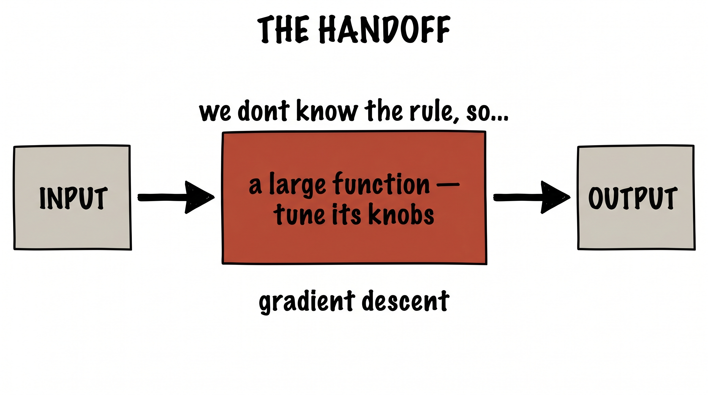
Switch the costume. The input is now an image — really just a grid of pixel numbers. The output is one word: cat or dog. And once again, the obvious first move is to try to build the rule by hand.
Before about 2012, that is exactly what a computer-vision scientist did. They sat down and wrote little detectors, one at a time — a function that looks for whiskers, a function that looks for floppy ears, a function that looks for a wet black nose — ran them across the image, and tallied up the votes. Something like:
It is clever, and it is wonderfully interpretable — you can read exactly why it decided "dog." It is also brittle and exhausting. One new breed, one odd camera angle, one cat with strangely floppy ears, and your lovingly hand-tuned rules fall apart. Every improvement is another late night writing another detector by hand.
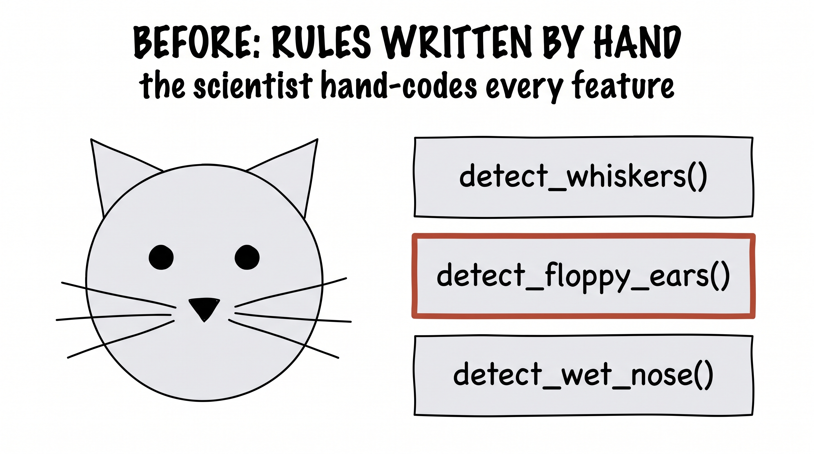
Then comes the handoff, and it is the same move as the virus. Stop writing detectors. Drop a big function — a convolutional neural network — between the pixels and the answer, and turn its knobs with gradient descent until it gets cats and dogs right. Nobody ever tells it about whiskers. But show it enough cats and dogs, and layer by layer it invents its own detectors — first edges, then textures, then ears and eyes and snouts — and you can actually see them light up inside the network as feature maps.
Don't know the rule from pixels to label → drop in a large function → hand it to the gradient. Exactly what we did for the disease.
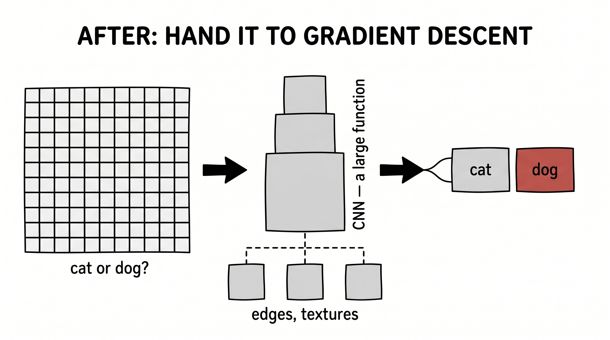
Now the costume that runs the modern world. Inside every large language model there is a step where each word looks around at the other words and decides which ones matter to it — a step called attention. In the sentence "the animal didn't cross the street because it was tired," the word "it" needs to look back and realize it means "animal." But by what rule should it know to do that?
Let's start where the model starts: with the words already turned into vectors. Every word is an embedding — a long list of numbers. The most obvious rule for "how much should word A attend to word B" is the simplest thing you can do with two vectors: take their dot product. The dot product is large when two vectors point the same way, small when they don't — a natural little similarity score.
We could build attention out of that and call it a day. But it's rigid: the raw embeddings were never shaped for this particular job, and a fixed dot product can't learn to ask the right question.
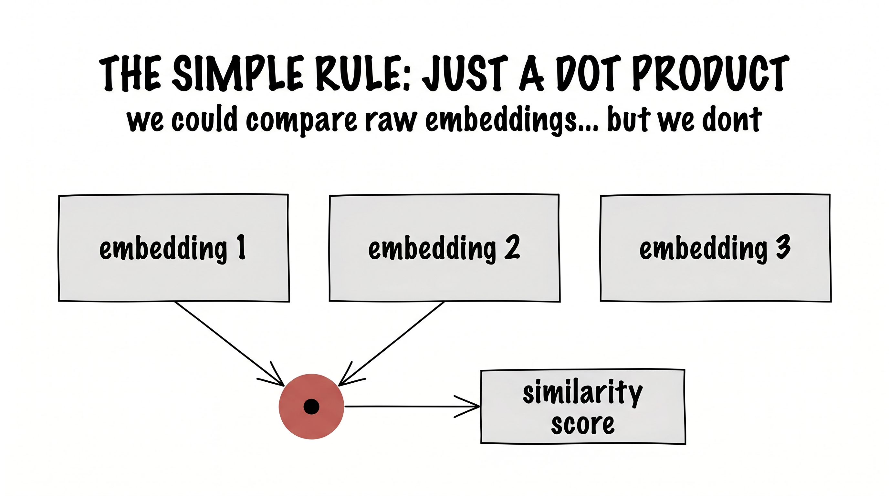
So we do the handoff. We slip three trainable matrices — WQ, WK, WV — between the embeddings and the dot product, and let them reshape each embedding into three new roles: a query (what am I looking for?), a key (what do I offer?), and a value (what do I pass on?).
Read it slowly. First the matrices turn each word's embedding into a query, a key, and a value. Then the attention score between two words is just a dot product again — but now between the learned query and key, not the raw embeddings. Scale it (the √dk keeps the numbers sane), softmax it into weights that add to one, and mix the values by those weights. That mix is the output.
Notice what we never did: we never wrote the rule for which word attends to which. We wrote three blank matrices and handed them to gradient descent. The rule for "it → animal" was never authored by a human. It was found.
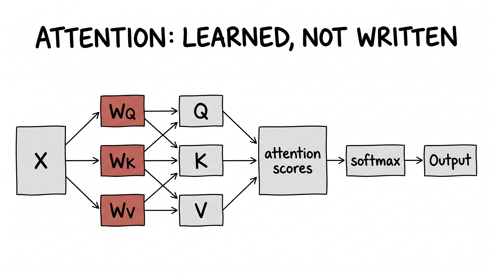
A virus, a photograph, a sentence. Three worlds with nothing in common — and the very same move in each. Don't know how to get from input to output? Put a big bundle of trainable numbers in the middle, define what "wrong" means, and let gradient descent find them. Once you see it, you cannot unsee it. It is, quite literally, most of modern AI.
It is worth remembering that this isn't the only way a machine can learn — and that for a while, it wasn't even the main way. Rewind to 1958, to Frank Rosenblatt's perceptron. It learned too. But in a completely different spirit, one that's almost the opposite of the handoff.
Here, a human wrote the learning rule itself, by hand. Show the perceptron one example. If it gets the answer right, leave it alone. If it gets it wrong, nudge each weight by a fixed, hand-designed recipe:
In words: take the true answer minus the guess, multiply by the input, and add a touch of that to the weights. That's it — a rule a person reasoned out and wrote down. And it has a beautiful effect: every time the perceptron sees an example it got wrong, its decision line tilts a little toward fixing that mistake. Watch it run on two classes of points and the line literally rotates, step by step, until it cleanly separates them.
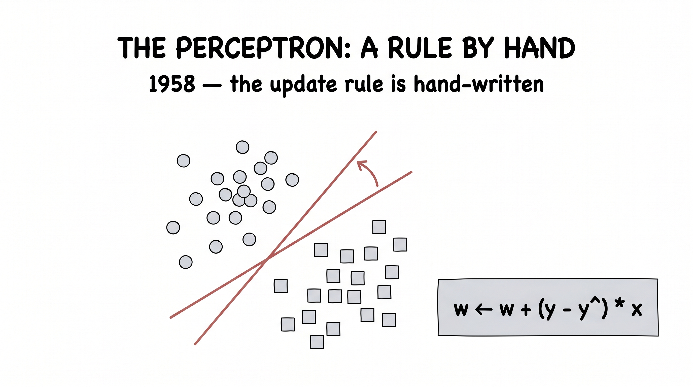
There is a real argument that this is the purer machine learning — a human understood the problem deeply enough to design the very update that fixes it. What we did in all the sections before this — handing a featureless pile of knobs to gradient descent and refusing to think about the rule at all — is what we now call deep learning. The perceptron writes the rule. Deep learning declines to, and hands the whole search away. Both learn. They just disagree about how much a human should have to understand first.
If this all sounds like history, it isn't. The handoff is being made right now, at the bleeding edge, by the most advanced labs in the world — and recognizing it turns frontier papers into something you can read calmly.
Take a very current problem. Long contexts make attention expensive: when a token has a hundred thousand previous tokens to look at, comparing it to all of them is wasteful. A token really only needs the few that matter. But which few? How do you choose?
You could try to hand-write a rule for "importance." Or — same move — you do what DeepSeek's sparse attention does: add a tiny extra set of trainable weights called an indexer. It turns each token into an index-query and each past token into an index-key, dots them to score every candidate, and keeps only the top handful. Nobody hand-codes which tokens to keep. We add blank trainable matrices and let gradient descent learn the selection.
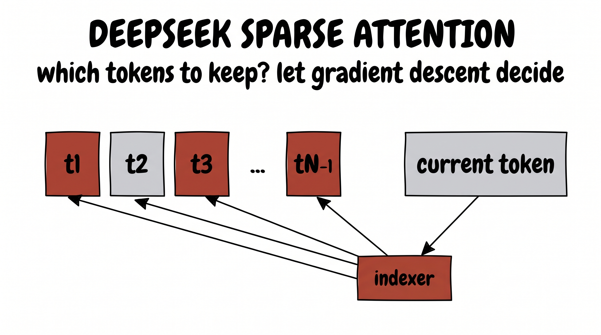
This is the thread that ties the whole lecture into a single knot. If you ever find yourself at a research frontier and you don't know how to get from input to output — a new architecture, a selection problem, a routing decision — reach for the same move. Blank trainable matrices, plus the gradient. It is almost always worth trying first.
You'd be right to be suspicious. It sounds almost too lazy to be true. Refuse to understand the problem, bolt on a giant pile of adjustable numbers, define "wrong," and let a slope-following procedure tune them in the fog? Surely that can't be how anything that looks like real intelligence emerges.
And yet. You are very likely reading this because of tools like Claude Code — which open real codebases, find real bugs, and write working software that ships. Pull that apart and what is inside? A large language model. Inside that, attention. Inside attention, WQ, WK, WV. And underneath all of it, gradient descent turning knobs against a loss. It is handoffs all the way down.
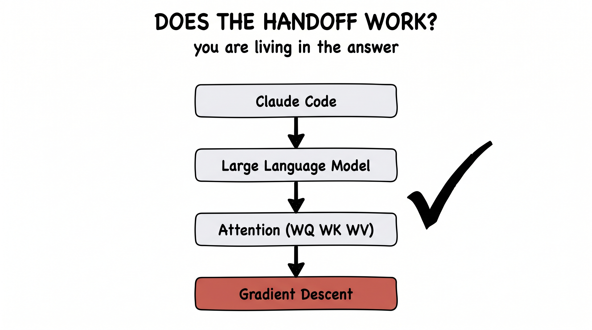
So — does it work? We don't have to argue about it anymore. We don't even have to run an experiment. We are living inside the answer, every day. The strangest part of this whole story is that the lazy move won.
When you can't write the rule from input to output — don't. Put a large function of trainable weight matrices in the middle, decide what "wrong" means, and hand the search to the gradient. Then check whether it worked. Lately, it almost always has.